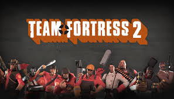

1. Minecraft

Minecraft (від англ. mine craft — досл. «шахтарське ремесло») — незалежна відеогра (інді-гра) студії Mojang 2011 року жанру «пісочниця» у відкритому світі з виглядом від першої/третьої особи. Гра започаткувала однойменну серію, для всіх творів якої характерний мінімалістичний кубічний дизайн.
Ця гра передусім дає змогу виразити свою креативність. Розроблена шведським програмістом Маркусом Перссоном, відомим також як «Notch», і надалі випускається заснованою Маркусом Перссоном компанією Mojang, котра належить Microsoft Studios. Minecraft належить до ігор з найширшою аудиторією і є найпродаванішою відеогрою в історії.
Відео з гри ->
Фото з гри

2. Roblox

Roblox (дата анонсування 1997, дата випуску 2006, також відомий, як DynaBlocks) — світова online-платформа для створення ігор. Користувачі Roblox (зокрема діти, підлітки) можуть створювати свої ігри за допомогою Roblox Studio (див. нижче), грати в ігри, створені іншими користувачами, а також створювати, одягати свого Roblox-персонажа (деякі товари в Roblox -каталог можна купити за ігрову валюту — Robux).
Будь-який користувач може завантажити Roblox Studio на свій комп'ютер і створювати місця (англ. Places). Плейси можна буде опублікувати на свій профіль в Roblox. Також творці можуть використовувати ігрову валюту в своїх міні-іграх — Robux (див. Ігрова валюта). За них можна купувати товари або послуги в грі.
<- Відео з гри
Фото з гри

3. Тетріс

Тетріс — відеогра-головоломка, розроблена Олексієм Пажитновим та його колегами. Перша версія гри була представлена 6 червня 1984 року, коли він працював в ОЦ Академії наук СРСР в Москві. Назву гри автор створив поєднавши грецький префікс «тетра-» зі словом «теніс» — улюбленою грою Пажитнова.
Ця гра в тому чи іншому вигляді існує майже для кожної ігрової консолі та операційної системи, а також для інших електронних пристроїв: мобільних телефонів, портативних медіаплеєрів, кишенькових комп'ютерів тощо.
Відео з гри ->
Фото з гри
4. Team Fortres 2
Team Fortress 2 (скор. TF2 ; дослівно з англ. - "Командна фортеця 2") - комп'ютерна гра в жанрі розрахованого на багато користувачів шутера від першої особи , розроблена і вперше видана компанією Valve Corporation в 2007 році в складі збірки The Orange Box для Windows і Xbox 360 ; пізніше цього ж року відбувся реліз гри у варіанті для PlayStation 3 ; реліз самостійної версії гри для Windows відбувся у 2008 році . На території СНД гра видавалася компанією « Бука » у складі The Orange Box , а також як незалежний програмний продукт (окремий DVD-диск ).
Гра, що служить сиквелом до модифікації Team Fortress під Quake і ремейку останньої - модифікації Team Fortress Classic під Half-Life , була анонсована в 1998 році, причому концепція і дизайн проекту протягом наступних дев'яти років, що склали час його розробки, істотно змінилися. У 1999 році здавалося, що геймплей гри відхилявся від ідей попередніх проектів у бік більшої реалістичності та мілітаризму, але за дев'ять років роботи над проектом концепцію було змінено. Фінальний варіант Team Fortress 2 дуже близький до оригінальних модифікацій Team Fortress і Team Fortress Classic , але різко відрізняється від них візуальною частиною, виконаною в мультяшному карикатурному стилі з використанням лицьової анімації, заснованої на творчості таких художників початку двадцятого століття як Дж . К. Лейенд 2 ] , слідуючи популярної тенденції недавніх фільмів , зокрема створених Pixar / Disney , наприклад, фільм « Суперсімейка ».